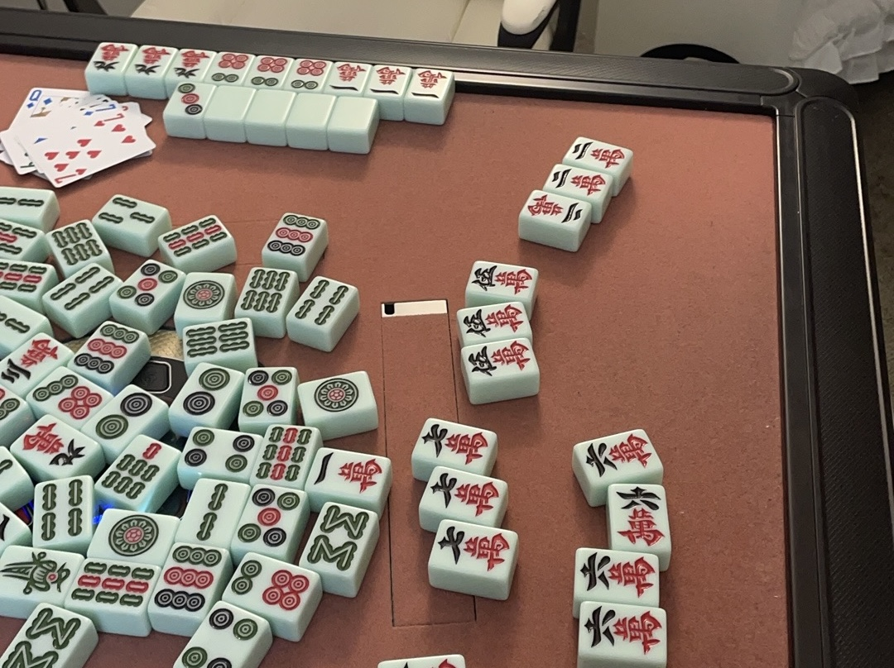

|
Runqing Cui Class of 2025 Major: Computer Science |
|
|
Runqing Cui Class of 2025 Major: Computer Science |
Before high school, I live in Nanchang, a small city in China. After deciding go aboard, I went to Beijing to attend International high school. Luckly, I was accept by Boston University, and began my acedemic life in computer science after taking professor Sullivan's CS111.
Dancing |
Dancing is my soul's language, expressing emotions words can't capture. Every movement flows with passion, joy, and vulnerability. |
BU dance club | |
|---|---|---|---|
|  |
Mahjong |
I‘m passionate about mahjong, the classic Chinese tile game that blends skill, strategy, and luck. I enjoy the social aspect of playing with friends. |
Mahjong Rules |
Photography |
Photography is how I express my love, because of capturing moments from the heart with every shot. Especially sky, view, and nature. |
Photography In Boston |